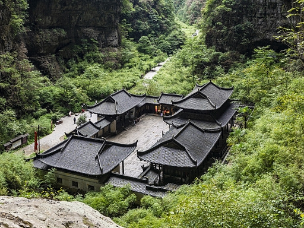
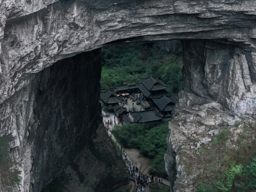
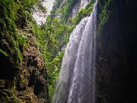
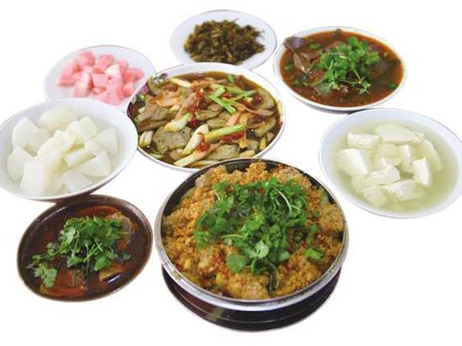
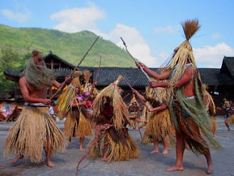

我的家乡
我来自重庆武隆，这里以其壮丽的自然风光和丰富的文化底蕴而闻名。 武隆拥有世界自然遗产地——天生三桥和地缝景区，是旅游爱好者的天堂。
武隆的美食也非常有特色，辣味十足的火锅和小面是当地人最喜欢的美食之一。 此外，武隆还有许多传统节日和民俗活动，让人们在欣赏美景的同时，也能感受到浓厚的地方文化。

我来自重庆武隆，这里以其壮丽的自然风光和丰富的文化底蕴而闻名。 武隆拥有世界自然遗产地——天生三桥和地缝景区，是旅游爱好者的天堂。
武隆的美食也非常有特色，辣味十足的火锅和小面是当地人最喜欢的美食之一。 此外，武隆还有许多传统节日和民俗活动，让人们在欣赏美景的同时，也能感受到浓厚的地方文化。




